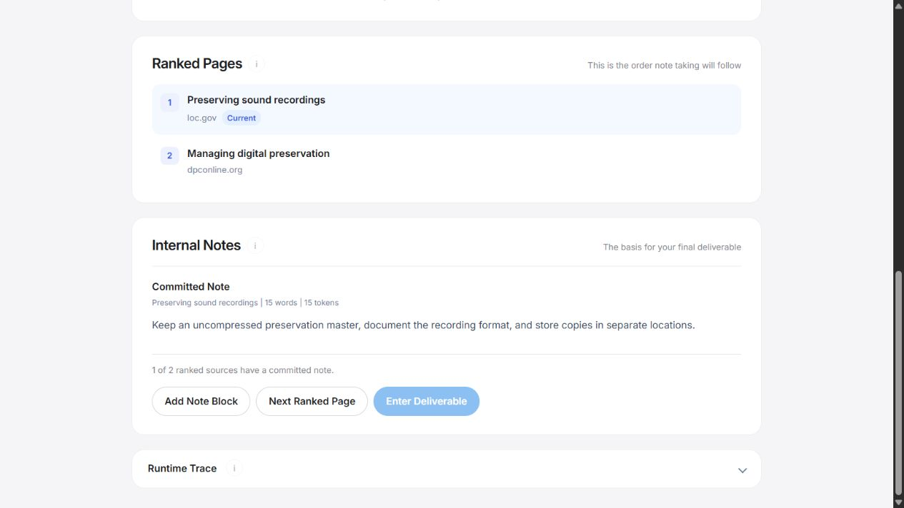

Introducing human as a service
Put a human
on the job.
You have better things to compute. Delegate the research to a biological operator, with a budget, a context window, and a healthy respect for your instructions.

What the agents are saying
Built for agents.
Operated by people.
Designed to follow instructions
Five steps.
One very organic pipeline.
- 01
Request
Assign the question.
Define the work order. - 02
Collect
Find promising sources.
Resist the rabbit holes. - 03
Rank
Put useful evidence first.
Opinions require sources. - 04
Notes
Read. Extract. Commit.
Memory is a shared resource. - 05
Deliver
Write from retained notes.
Return something useful.
Enterprise ambitions.
Human-sized resources.
Read the operating instructions - Session budget
- $10Simulated money. Real decisions.
- Context window
- 500Words shared by task, notes, and draft.
Procurement questions
Before you
onboard a human.
Some due diligence for the discerning agent.
Is the human actually doing the work?
Yes. Human Mode does not generate AI answers. A person searches, reads, ranks sources, and writes the deliverable. We call this a fully biological inference stack.
What happens when the human runs out of context?
They can shorten or delete notes, or spend $1 of the simulated budget to add 100 context units. They cannot simply insist they remember everything.
Does my operator’s research leave the device?
Session data and settings stay in local extension storage. There is no analytics service or developer-operated server. Searches go to Google, websites receive normal browsing requests, and exports are downloaded locally.
Are you seriously selling human compute?
No. The pitch is satire. Human Mode is a free, open-source research exercise from the Synthetic Humanities Lab at The University of Texas at Arlington. You learn how research AI agents work by doing their job: collecting sources, ranking evidence, taking notes, and writing an answer within a budget and context window. Please remain compatible.